Doctor Who
Doctor Who

Sinopse
Doctor Who (tradução literal: Doutor Quem) é uma série de ficção científica britânica, produzida e transmitida
pela British Broadcasting Corporation (BBC) desde 1963. A série retrata as aventuras do Doutor, um alienígena da
espécie fictícia de Senhores do Tempo do planeta Gallifrey que explora o universo em sua máquina capaz de viajar
pelo espaço e pelo tempo, conhecida como TARDIS (Time and Relative Dimension in Space), cuja aparência exterior
se assemelha a uma cabine de polícia londrina de 1963. Juntamente aos seus companheiros, o Doutor enfrenta uma
variedade de inimigos, enquanto trabalha para salvar as civilizações, ajudar as pessoas comuns e corrigir erros.
Episódios
- “Blink” (Temporada 3, Episódio 10) - Conhecido por introduzir os Weeping Angels, é um dos episódios mais
assustadores e aclamados da série.
- “The Day of the Doctor” (Especial de 50 anos) - Celebração do 50º aniversário da série, reunindo múltiplos
Doutores.
- “Vincent and the Doctor” (Temporada 5, Episódio 10) - Um episódio emocional onde o Doutor e Amy encontram
Vincent van Gogh.
- “The Empty Child” / “The Doctor Dances” (Temporada 1, Episódios 9 e 10) - Introduz o Capitão Jack Harkness e
a frase icônica “Are you my mummy?”.
- “Silence in the Library” / “Forest of the Dead” (Temporada 4, Episódios 8 e 9) - Introduz River Song e os
Vashta Nerada.
- “Heaven Sent” (Temporada 9, Episódio 11) - Um episódio quase solo com Peter Capaldi, mostrando a resiliência
do Doutor.
- “The Girl in the Fireplace” (Temporada 2, Episódio 4) - O Doutor encontra Madame de Pompadour em uma
história de amor e sacrifício.
- “Human Nature” / “The Family of Blood” (Temporada 3, Episódios 8 e 9) - O Doutor se torna humano para
escapar de caçadores alienígenas.
- “Doomsday” (Temporada 2, Episódio 13) - Um final emocionante para a segunda temporada com a despedida de
Rose Tyler.
- “Journey’s End” (Temporada 4, Episódio 13) - Conclusão épica da quarta temporada com a reunião de vários
companheiros do Doutor
Personagens
- Primeiro Doutor - William Hartnell
- Segundo Doutor - Patrick Troughton
- Terceiro Doutor - Jon Pertwee
- Quarto Doutor - Tom Baker
- Quinto Doutor - Peter Davison
- Sexto Doutor - Colin Baker
- Sétimo Doutor - Sylvester McCoy
- Oitavo Doutor - Paul McGann
- Nono Doutor - Christopher Eccleston
- Décimo Doutor - David Tennant
- Décimo Primeiro Doutor - Matt Smith
- Décimo Segundo Doutor - Peter Capaldi
- Décima Terceira Doutora - Jodie Whittaker
- Décimo Quarto Doutor - David Tennant (novamente)
- Décimo Quinto Doutor - Ncuti Gatwa
Galeria
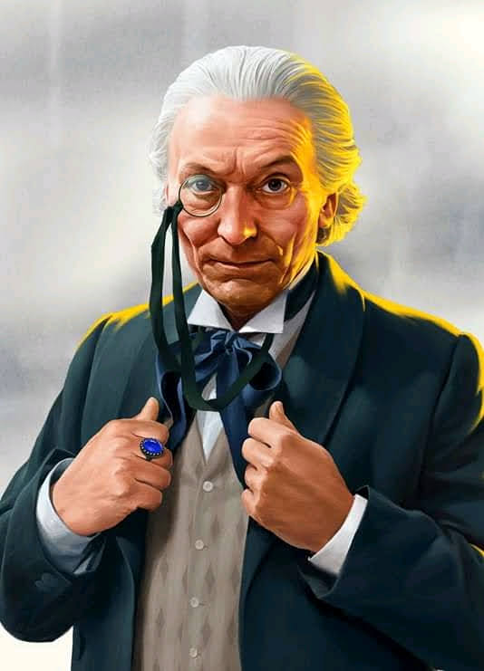
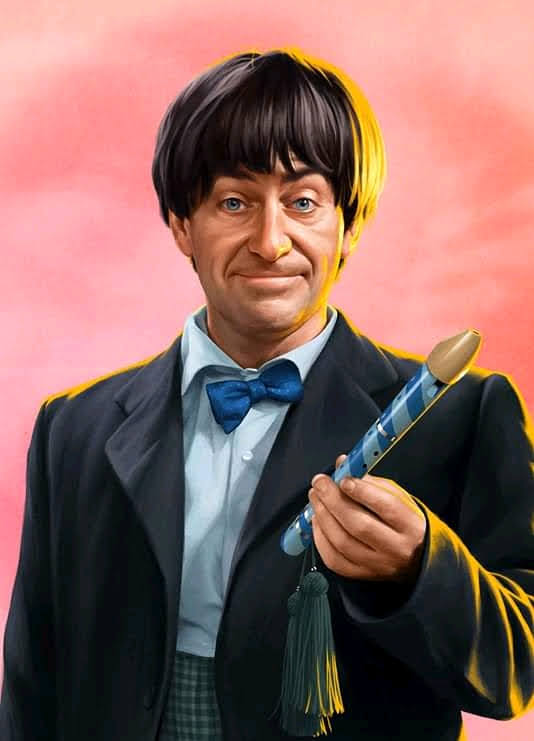
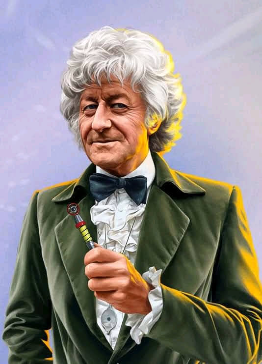
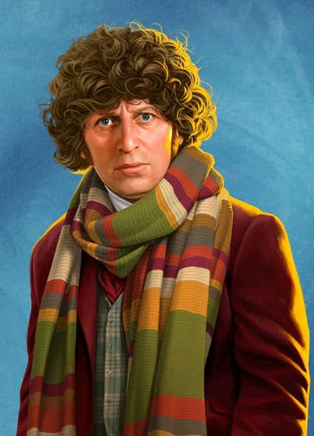
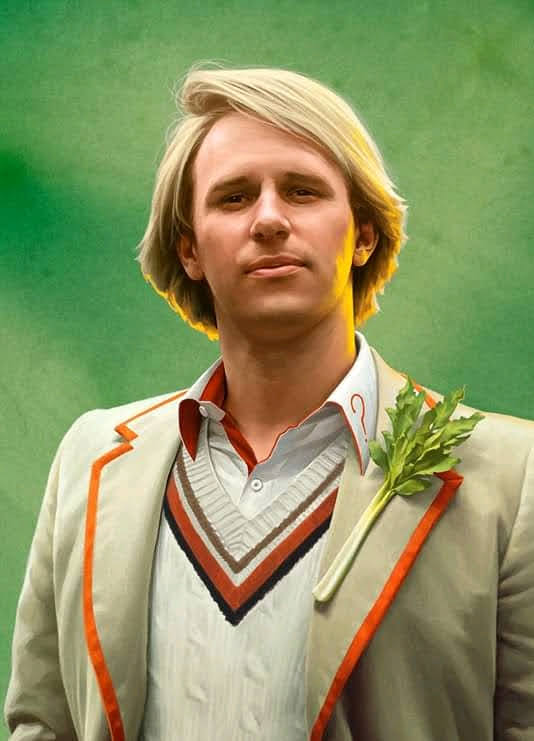
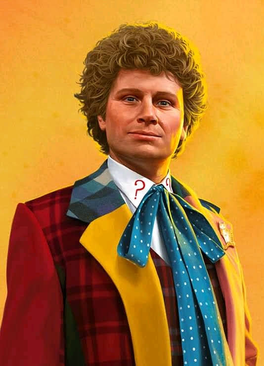
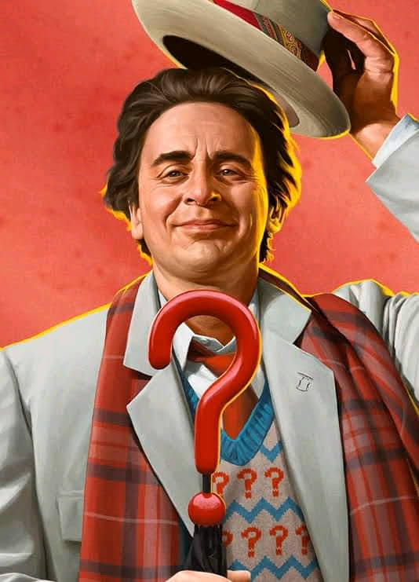
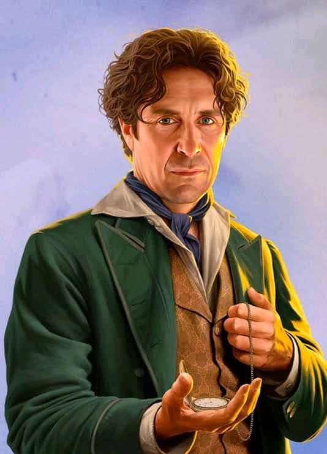
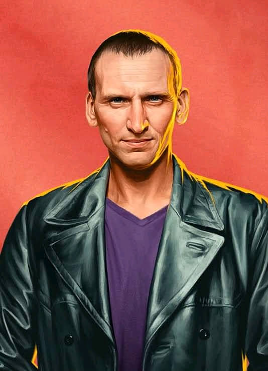
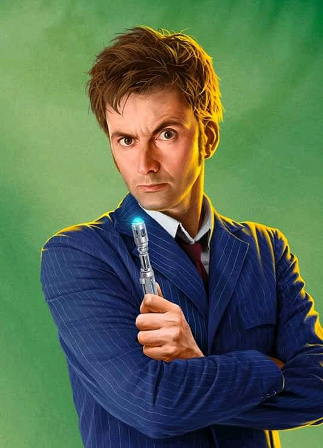
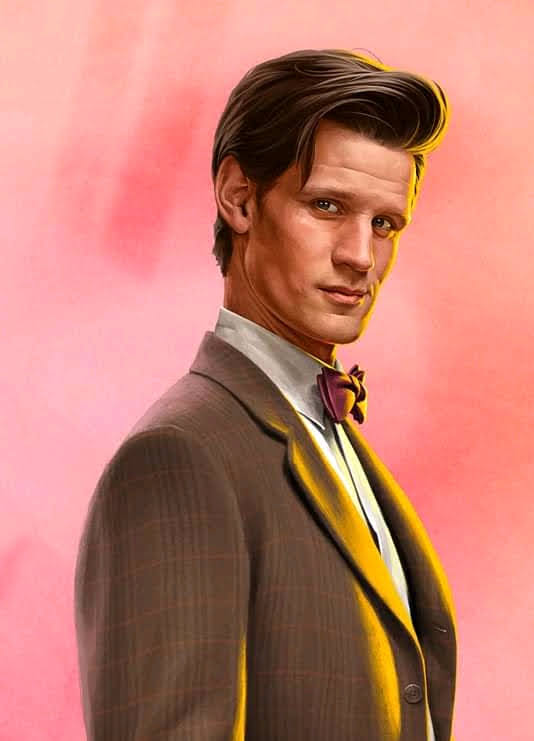
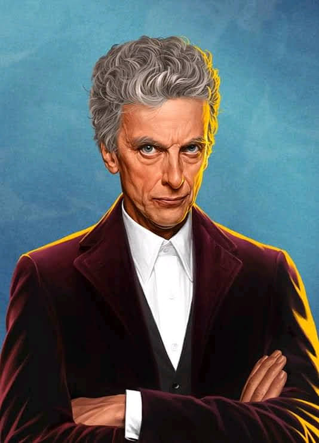
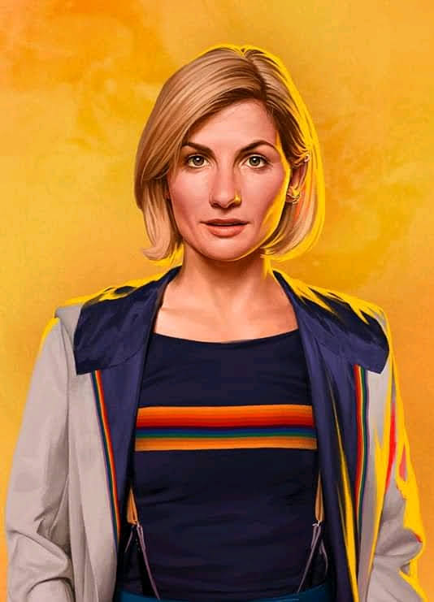
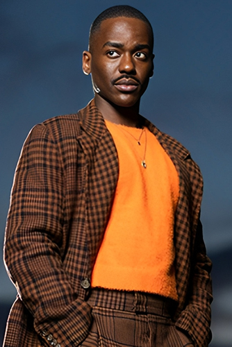
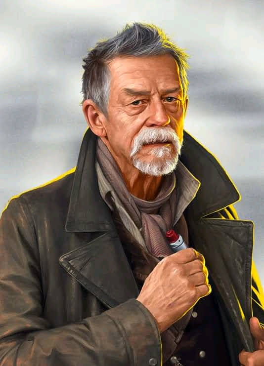